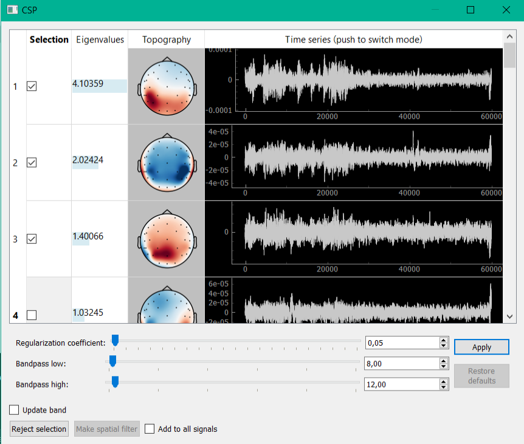

CSP
Interface for CSP (common spatial pattern) decomposition looks similarly. This method allows you to select components with the highest ratio of signal power to the two windows (usually the first window corresponds to the first half of the recording, in which subject stays with closed eyes, in the second - open). A key part of the algorithm is the solution of the generalized eigenvalue problem. Algorithm parameters handed down and can be adjusted by sliders at the bottom of the window.
Example: allotment and removal of the alpha activity.
This example is relevant for experiments in training the mu rhythm. As mu and alpha rhythms are in the same frequency range, only frequency filtering (specified in the properties of the derived signal) is not enough to highlight the mu rhythm. With CSP analysis it is possible to create a spatial filter, which reduces the contribution of alpha activity in the derived signal. The following describes a typical algorithm of this procedure:
Data collection. Allotment of the alpha activity is possible with the help of the following protocol: in the first half of a protocol give the task to the subject to seat with his/her eyes closed, and in the second - to open (in the settings of the protocol can be set checkbox “Add half time extra message” to change the message displayed on the screen at the moment when first half was completed). These two contrasting states are able to allocate space alpha activity in CSP algorithm.
CSP decomposition of the collected data. During the experiment, at the end of the protocol, at the time of opening the signals manager, necessary to select the signal to which you want to add to filter alpha activity, t then click on the appropriate line of the open button from ICA column. Collected in the “Protocol Filters” multichannel data will be decomposed into n components by CSP (n - number of channels). Next window appears to visualize data components; in Figure 9 you could see an example.
Selection a component corresponding to the alpha activity. Further, it is necessary to note row corresponded to components, in which observes alpha activity. In the example of Figure 9 such component 3 (1.3 parts).
Creation spatial bandstop filter. After selecting the components that you want to exclude from the data, you must click “Reject selection”. For the selected signals will be created a spatial filter, which removes the selected CSP components. If you check the checkbox “add to all signals”, then the filter will be added to all derived signals.
Continuation of the experiment. After closing signals manager in the real-time for selected derived signals will be applied a spatial filter, which removes the selected CSP components with alpha activity.